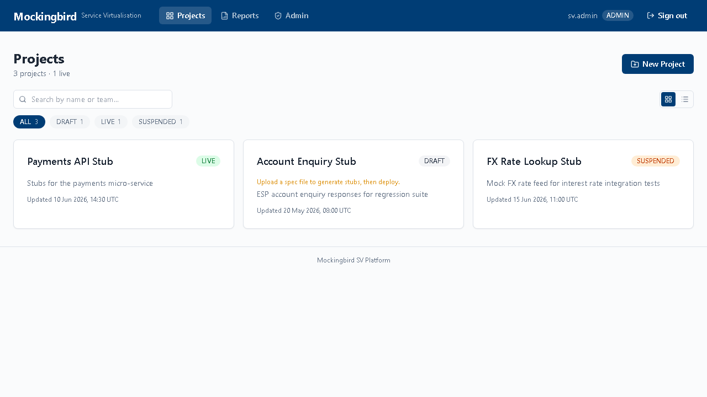
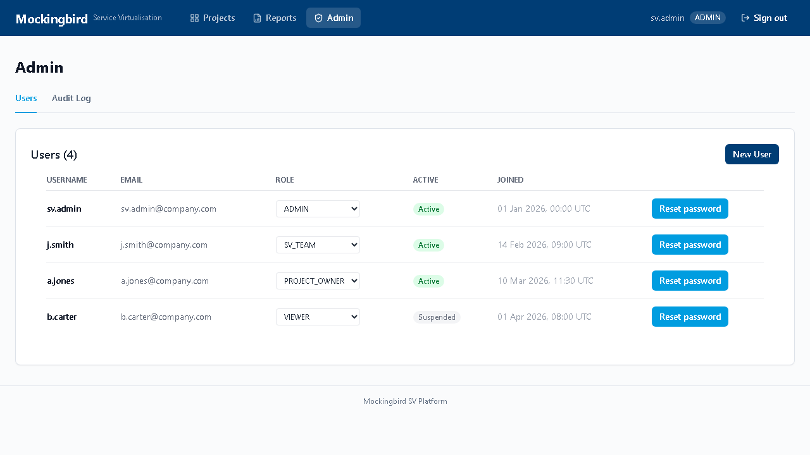
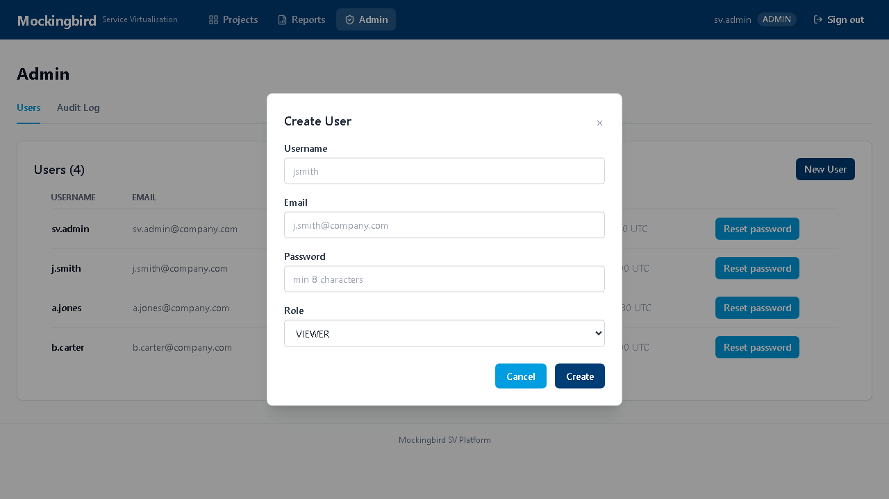
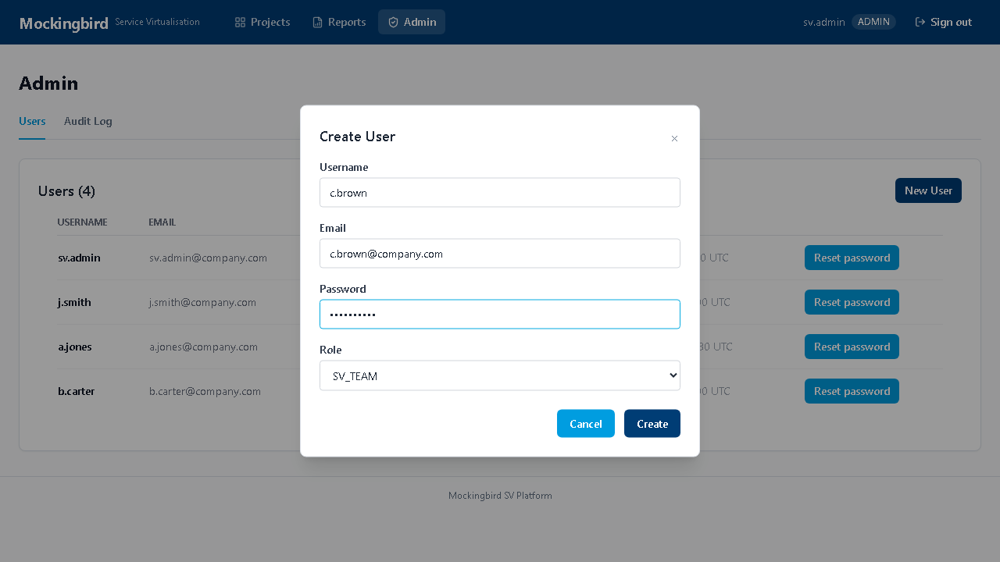
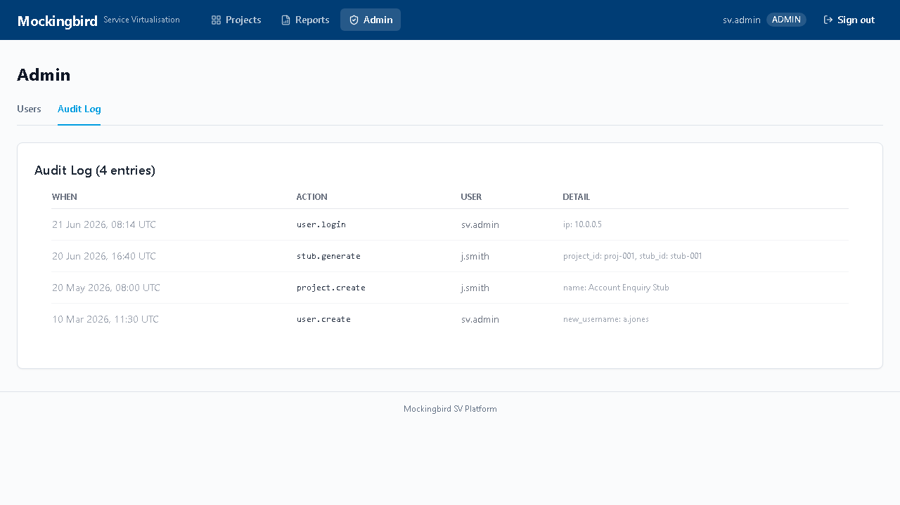
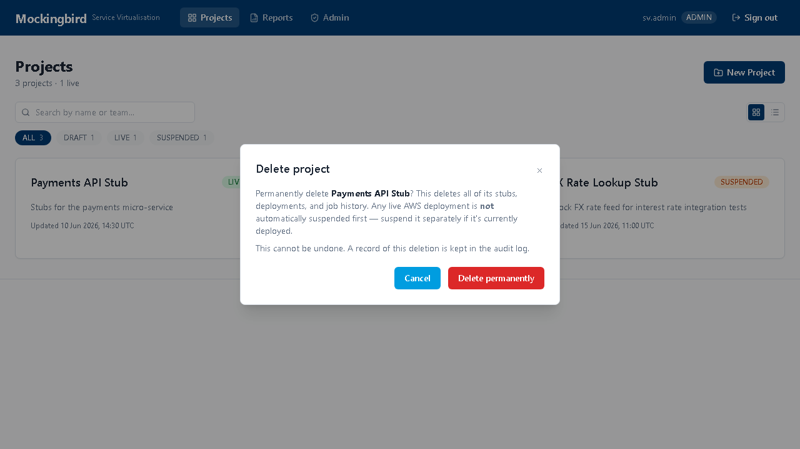

Mockingbird — Admin Guide
Everything an ADMIN can do in Mockingbird — the full user functionality (projects, uploads, deployments, reports) plus the admin-only capabilities: user management, the audit log, and permanently deleting a project.
Roles & permissions
| Capability | VIEWER | SV_TEAM | ADMIN |
|---|---|---|---|
| View projects, stubs, deployments, reports | ✓ | ✓ | ✓ |
| Create / upload / generate / deploy / suspend | — | ✓ | ✓ |
| Edit / Archive a project | — | ✓ | ✓ |
| Manage users (create, change role, reset password, suspend) | — | — | ✓ |
| View the audit log | — | — | ✓ |
| Permanently delete a project | — | — | ✓ |

Projects, upload, and deploy — same as any user
As an admin you have every capability described in the User Guide — creating projects, uploading specs (single file or batch, with automatic request/response pairing), generating stubs with AI, testing locally, deploying to AWS, and downloading reports. That full walkthrough with screenshots isn't repeated here; this guide focuses on what's unique to your role.
User management ADMIN
Open Admin in the top nav — the Users tab is the default view.

Creating a user
- Click New User.
- Fill in username, email, a temporary password, and pick a role (VIEWER / SV_TEAM / ADMIN).
- Click Create — the account is active immediately.


Changing a role, resetting a password, suspending an account
- Role — use the dropdown directly in the Users table row; it saves on change.
- Reset password — click the button in that user's row to issue a new temporary password.
- Suspend / reactivate — toggle the Active column to immediately block or restore portal access without deleting the account or its history.
Audit log ADMIN
Switch to the Audit Log tab in Admin for a timestamped record of every significant action across the platform — logins, project creation, uploads, generation, deployment, user management changes, and project deletions.

Deleting a project ADMIN
Unlike Archive (which just hides a project from the dashboard, fully reversible, available to SV_TEAM too), Delete is a permanent, admin-only action available directly from the dashboard.
- On the dashboard, hover a project card — a delete (trash) icon appears top-right. In list view, it's the last column.
- Click it, and review the confirmation dialog carefully.
- Click Delete permanently to confirm.

Screenshots captured from the running portal against the current build. If the UI looks different from these images, the app has moved on since this was written — trust the running app over this document.